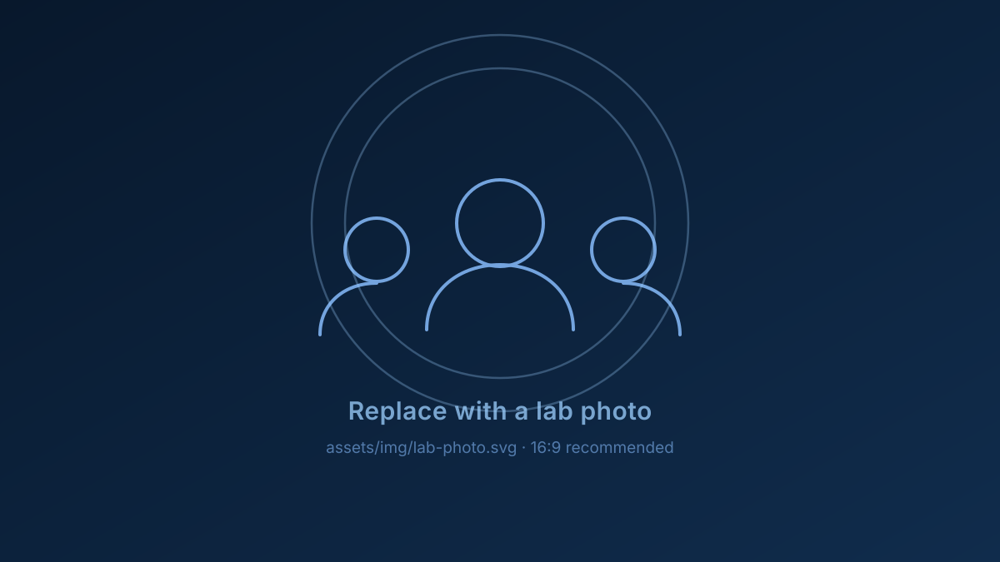

Sensing, Networking, and AI Lab
We develop algorithms and build systems for multi-modal sensing to connect, perceive, and interact with the environment in novel ways — enabling more efficient, more robust, and more capable mobile, cyber-physical, and cyber-human systems.
Mobile and wireless systems, multi-modal sensing, computer vision, and robotics — studied together rather than in isolation.
Machines still perceive the world through a narrow slit: a camera sees only the first opaque surface, and a radio hears only what it was designed to hear. We build perception systems that combine radio frequency signals, vision, depth, and touch, so that robots and people can find, reach, and reason about things that no single sensor can observe on its own.
Our work spans algorithm design, hardware prototyping, and evaluation on real platforms in real clutter — and lands in wireless networking, cyber-physical systems, and human-computer interaction.

Four threads, one question
How do we give machines — and the people who work with them — a richer sense of the physical world?
Selected work
Systems we have designed, built, and tested on real hardware.
Recent papers
Our work is made possible by
We are recruiting
The lab is looking for PhD students, Masters students, and undergraduate researchers who want to build sensing systems end to end — from signal processing and hardware to learning and evaluation.